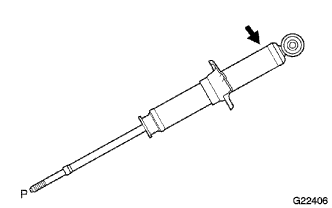

リヤショックアブソーバW/コイルスプリング（4WD） 廃却
印刷
準備品一覧
1. ショック アブソーバASSY RR LH廃却
穴開けによる廃却方法
ピストンロッドを伸ばした状態にしてバイスに斜めに固定する。

ショックアブソーバ下端の溶接箇所から３ｃｍぐらいの場所に金ノコなどを利用して、ゆっくり穴を開けてガスを抜く。
■ 注 意 ■
抜け出すガスは無色、無臭、無害である。
ガスの勢いで切り粉などが飛び出すことがあるので、金ノコの上にウエスなどをかぶせた状態で穴を開ける。